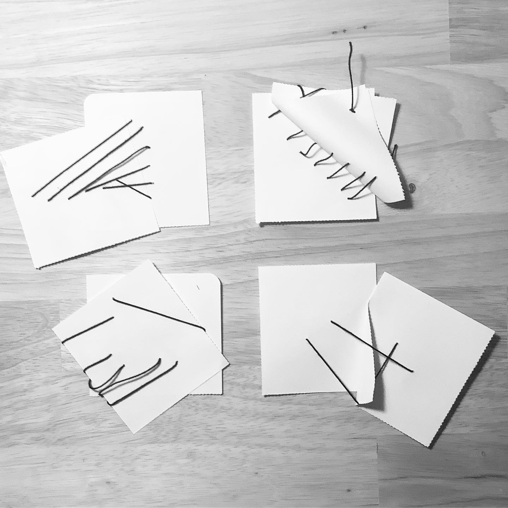
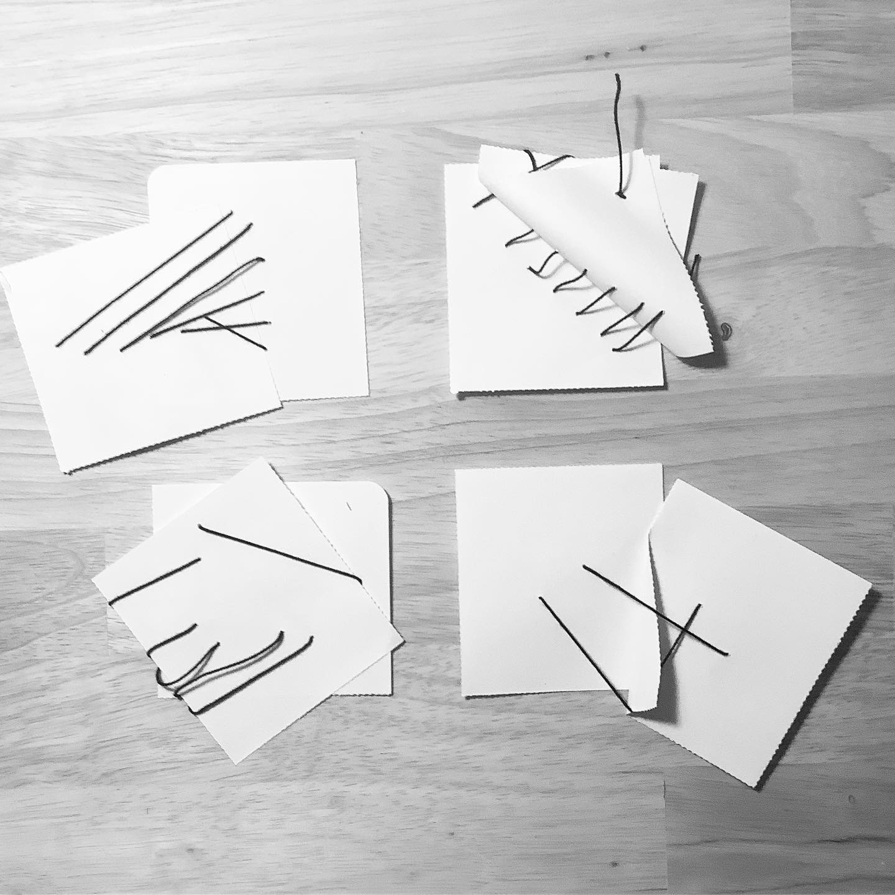

Data Pseudomophs
A data pseudomoph is a representation of personal, bodily, or local data.
pseudo=false: challenges the objective or overly-certain appearance of data representation, which is often misleading. What are the requirements for truth in an abstract representation of an embodied experience?
morph=form: tactile, sculptural
pseudomorph: the inky shadow expelled by cephalopods as a defense mechanism: using materials that are adjacent or by-products of what is being represented: like using the physical volume of paper grocery store recepits to represent nutrition.
Mark-Making
Inspired by the exercise in Observe, Collect, Draw (Lupi, Posavec), we invite you to make marks on a piece of paper, corresponding to your heartbeat.
- Marisa Satsia
Material
We will make our demonstrations using paper, thread, and cardboard. We invite you to repurpose items that are not otherwise usable, such as receipts, damaged boxes, or paper scraps.
 

- Kit Kuksenok
Reconstitution
Reconstitution as a practice; or perhaps an exorcism - the expelling of the false-form.

Notes from one of the sculptures, first constructed in May, 2020: "the outcome of fishing a discarded piece of spiral bound notebook wire out of the recycling and re-articulating it: smoothing out its kinks, partitioning it, binding it, adorning it. Constructing a coherent unit from it, with a posture (it is sitting) and a direction (it is facing me) and from that arising perhaps a desire (it wants to be my friend). It wasn’t my trash and it isn’t my friend, but, nevertheless, through my acts, it has posture and direction."

- Kit Kuksenok